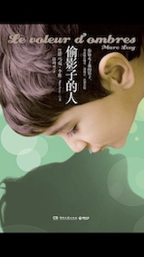
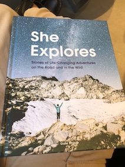
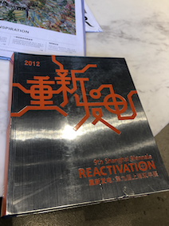
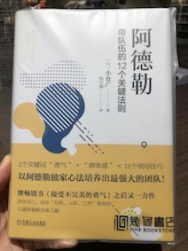
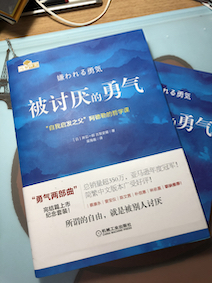
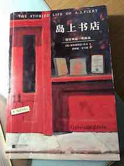

Reading
Clean Code
穷查理宝鉴
1984
恋爱心理必修课
人类愚蠢辞典
黑客与画家
整理情绪的力量
2020
Dec
我这一辈子
偷影子的人
一本温暖的小说，温馨 诙谐 充满爱和喜悦，也有淡淡的悲伤

Nov
She Explores
充满女性力量，书中收集分享了一些女性探险家们的经历和故事。她们的文字虽朴素，却很有力量，展示了对我来说不同寻常的她们的日常。

重新发电
是第九届上海双年展的记录册，也是上海当代艺术馆的建造手册。里面有很多的展品介绍，虽不能百分百体会和感受到每件展品内涵，亦大开眼界。

阿德勒 带队伍的12个关键法则
用一个精彩的小故事串联起了12个关键法则，浅显易懂，毫不费力地一口气看完。

Oct
被讨厌的勇气
用一个青年人和哲学家的辩论来讨论阿德勒心理的一些内涵。读者就像那个青年，有自己的思考，也受传统唯物主义影响已久，对于新的概念和内容持有反对、怀疑，甚至愤怒，不停地想挑战，但最后慢慢接受了这些概念。

Sep
神奇手账
幸运手账 + 手帐入坑指南
最强手账改造术
聪明人用方格笔记本
Apr
岛上书店
shuxian先看的，我紧随其后，特别快地翻完了。读起来还是很轻松好睡的。
没有谁是一座孤岛，一书一世界。
书店是个好地方，应该没有人不喜欢。
